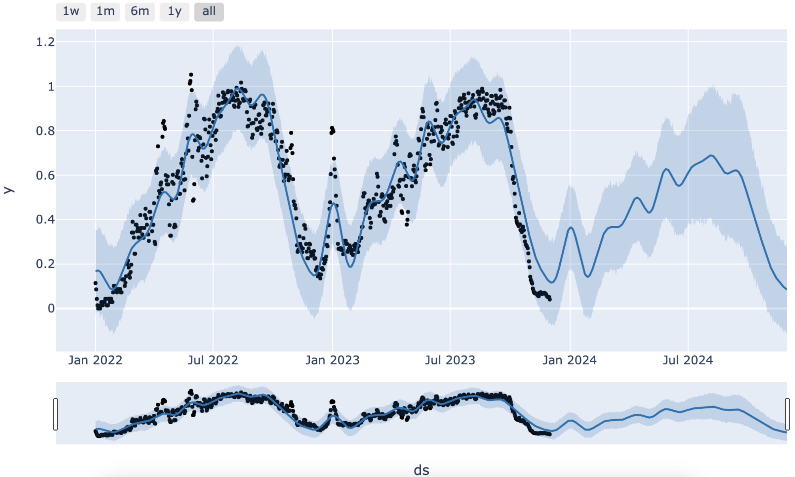
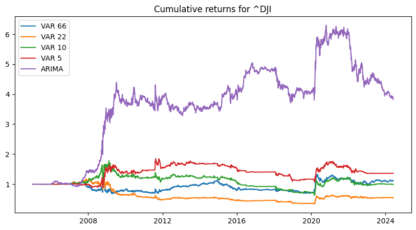
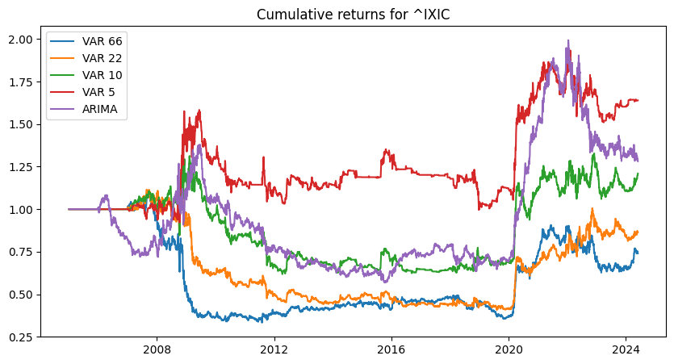
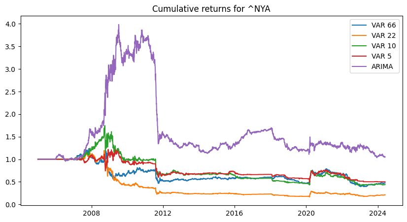

Table of Contents
Strategy Details
Reference: Sahil Teymurzade & Robert Ślepaczuk, 2023. "Predicting DJIA, NASDAQ and NYSE index prices using ARIMA and VAR models," Working Papers 2023-27, Faculty of Economic Sciences, University of Warsaw.
Link to reference: https://ideas.repec.org/p/war/wpaper/2023-27.html
The main idea: Stock forecasting with ARIMA or VAR models.
My 2 cents on the matter
Personally, I have never seen ARIMA or VAR models work. They usually work on stationary data. But the stock market prices is highly non-stationary and even differencing wouldn't help much. In the lower quality papers, specially the ones in the engineering area, some authors use r-squared, mean squared errors, or similar metrics to claim they have a good model. Well, if you use a simple moving average, you get an r-squared of more than 95% for the prices, not the returns. A more advanced model would be using LSTM to do such thing, but again, the problem
What I won't do as what the paper has done?
- The paper does an optimization on the p, q, d of ARIMA model. I won't do it, because based on my personal experience, it won't change the results that much. I will simply use ARIMA (2,2,2)
- The paper tries to find the optimal lag by using AIC to find the best VAR model. I will simply use 5 days, 10 days, 22 days, and 66 days. We can see the results for all of them.
- The paper accounts for transaction costs. I will simply see of the absolute value of the forecast will return more than 10 bps. That will be my assumption for transaction costs.
- There are many parts in the paper that is ambiguous to me. For example, the paper claims that they use the first 500 days as the training, but they still have trading results over the first 2 years of the paper. Either, I am missing something, or they should start their simulation after the first 2 years.
Let's do it anyway. It will be a good sample for ARIMA codes. At least I hope.
Initial Setup
First, let's import the necessary libraries and set up our data parameters:
import os
import pandas as pd
import numpy as np
import matplotlib.pyplot as plt
from multiprocessing import Pool
import yfinance as yf
from statsmodels.tsa.arima.model import ARIMA
import statsmodels.api as sm
start_date = '2000-11-30' # Same as the paper
end_date = '2020-11-30' # Same as the paper
tickers = ['^DJI', '^IXIC', '^NYA']
Code Explanation
This code section sets up the initial environment:
- Imports essential Python libraries:
- pandas and numpy for data manipulation
- matplotlib for visualization
- yfinance for downloading stock data
- statsmodels for ARIMA and VAR modeling
- Defines key parameters:
- start_date and end_date matching the paper's timeframe
- tickers list containing major US indices (DJIA, NASDAQ, NYSE)
Data Download and Processing
Let's create functions to download and process the data:
# Load the data
def download_data(symbol):
direc = 'data/'
os.makedirs(direc, exist_ok=True)
file_name = os.path.join(direc, symbol + '.csv')
if not os.path.exists(file_name):
ticker = yf.Ticker(symbol)
df = ticker.history(start='2005-01-01', end='2024-5-31')
df.to_csv(file_name)
for i, symbol in enumerate(tickers):
print (f'Loading data for {symbol} ({i+1}/{len(tickers)})', end='\r')
download_data(symbol)
print (f'Loaded data for {len(tickers)} companies')
def process_data(symbol):
df = pd.read_csv(f'data/{symbol}.csv', index_col=0)
df.index = pd.to_datetime(df.index, utc=True).tz_convert('US/Eastern')
df = df[['Open', 'Close']]
# Adding the returns
df['returns'] = df['Close'].pct_change()
df['next_day_return'] = df['returns'].shift(-1)
# Assuming that we will open position tomorrow at the opening price
df['next_day_return_intraday'] = (df['Close'] / df['Open'] - 1).shift(-1)
# Adding the 5-day exponential moving average
df['5d_ema_pred'] = df['Close'].ewm(span=5, adjust=False).mean().shift()
# Lagging the returns for the VAR model
for i in range (67):
df[f'return_lag_{i}'] = df['returns'].shift(i)
return df
holder = {}
for i, symbol in enumerate(tickers):
print (f'Processing data for {symbol} ({i+1}/{len(tickers)})', end='\r')
holder[symbol] = process_data(symbol)
Code Explanation
This code section implements efficient data management:
- Data Download Function:
- Creates a 'data' directory if it doesn't exist
- Implements caching to avoid re-downloading existing data
- Downloads historical data from Yahoo Finance
- Data Processing Function:
- Reads and processes CSV files with proper datetime indexing
- Converts timezone to US/Eastern for consistency
- Calculates various return metrics:
- Daily returns
- Next day returns
- Intraday returns
- 5-day exponential moving average
- Creates lagged returns for VAR model analysis
- Data Storage:
- Stores processed data in a dictionary for easy access
- Shows progress with dynamic counters
Vector Autoregression (VAR) Model Implementation
Now we'll implement the VAR model using different lag periods to analyze their predictive power:
# Doing the VAR model first
look_back_period = 500
for symbol, df in holder.items():
for target_lag in [5, 10, 22, 66]:
cols = [f'return_lag_{i}' for i in range(target_lag)]
df[f'VAR_pred_lag_{target_lag}'] = np.nan
for i, idx in enumerate(df.index):
if i < look_back_period:
continue
X = df[cols].iloc[i-look_back_period:i]
Y = df['next_day_return'].iloc[i-look_back_period:i]
model = sm.OLS(Y, X, missing='drop')
results = model.fit()
pred = results.predict(df[cols].iloc[i].values)
df.at[idx, f'VAR_pred_lag_{target_lag}'] = pred
if i % 100 == 0:
print (f'VAR model for {symbol} with target lag {target_lag} ({i}/{len(df)})', end='\r')
holder[symbol] = df
Code Explanation
This code section implements the Vector Autoregression (VAR) model:
- Model Configuration:
- Uses a look-back period of 500 days for training
- Tests multiple lag periods: 5, 10, 22, and 66 days
- Creates lagged return features for each period
- Model Implementation:
- Uses Ordinary Least Squares (OLS) regression
- Predicts next day returns using lagged returns
- Handles missing data with 'drop' option
- Data Processing:
- Iterates through each stock symbol
- Processes data in a rolling window fashion
- Stores predictions in new columns for each lag period
ARIMA Model Implementation
Now we'll implement the ARIMA model to predict future stock prices:
# Doing the ARIMA model
import warnings
warnings.filterwarnings("ignore")
from numpy.linalg import LinAlgError
look_back_period = 250
for symbol, df in holder.items():
df[f'ARIMA_pred_{look_back_period}'] = np.nan
for i, idx in enumerate(df.index):
if i < look_back_period:
continue
X = df['Close'].iloc[i-look_back_period:i].values
try:
model = ARIMA(X, order=(2, 2, 2))
model_fit = model.fit()
pred = model_fit.get_forecast(steps=1).predicted_mean[0]
df.at[idx, 'ARIMA_pred'] = pred
except LinAlgError:
df.at[idx, 'ARIMA_pred'] = df.at[idx, 'Close']
if i % 100 == 0:
print (f'ARIMA model for {symbol} ({i}/{len(df)})', end='\r')
df['Expected_return_based_on_ARIMA'] = df['ARIMA_pred'] / df['Close'] - 1
holder[symbol] = df
Code Explanation
This code section implements the ARIMA (AutoRegressive Integrated Moving Average) model:
- Model Configuration:
- Uses a look-back period of 250 days for training
- Implements ARIMA(2,2,2) model as specified in the paper
- Suppresses warnings to avoid cluttering the output
- Model Implementation:
- Iterates through each stock symbol in the dataset
- Uses a rolling window approach for predictions
- Handles potential linear algebra errors gracefully
- Stores predictions in new columns for analysis
Results Analysis
Let's analyze the results of our VAR and ARIMA models:
for symbol, df in holder.items():
# For the VAR model
for target_lag in [5, 10, 22, 66]:
mask = df[f'VAR_pred_lag_{target_lag}'].abs() > 0.0010
df[f'realized_return_VAR_lag_{target_lag}'] = np.nan
df.loc[mask, f'realized_return_VAR_lag_{target_lag}'] = df.loc[mask, 'next_day_return_intraday'] * np.sign(df.loc[mask, f'VAR_pred_lag_{target_lag}'])
df[f'realized_return_VAR_lag_{target_lag}'].fillna(0, inplace=True)
# For the ARIMA model
mask = df['Expected_return_based_on_ARIMA'].abs() > 0.0010
df['realized_return_ARIMA'] = np.nan
df.loc[mask, 'realized_return_ARIMA'] = df.loc[mask, 'next_day_return_intraday'] * np.sign(df.loc[mask, 'Expected_return_based_on_ARIMA'])
df['realized_return_ARIMA'].fillna(0, inplace=True)
# Find the sharpe and plot the cumreturns
results_holder = {}
for symbol, df in holder.items():
results = {}
for target_lag in [5, 10, 22, 66]:
realized_returns = df[f'realized_return_VAR_lag_{target_lag}']
sharpe_VAR = np.sqrt(252) * realized_returns.mean() / realized_returns.std()
results[f'VAR_{target_lag}'] = sharpe_VAR
realized_returns = df['realized_return_ARIMA']
sharpe_ARIMA = np.sqrt(252) * realized_returns.mean() / realized_returns.std()
results['ARIMA'] = sharpe_ARIMA
results_holder[symbol] = results
# Plotting the cumulative returns
df['cumulative_return_VAR_66'] = (1 + df['realized_return_VAR_lag_66']).cumprod()
df['cumulative_return_VAR_22'] = (1 + df['realized_return_VAR_lag_22']).cumprod()
df['cumulative_return_VAR_10'] = (1 + df['realized_return_VAR_lag_10']).cumprod()
df['cumulative_return_VAR_5'] = (1 + df['realized_return_VAR_lag_5']).cumprod()
df['cumulative_return_ARIMA'] = (1 + df['realized_return_ARIMA']).cumprod()
plt.figure(figsize=(10, 5))
plt.plot(df['cumulative_return_VAR_66'], label='VAR 66')
plt.plot(df['cumulative_return_VAR_22'], label='VAR 22')
plt.plot(df['cumulative_return_VAR_10'], label='VAR 10')
plt.plot(df['cumulative_return_VAR_5'], label='VAR 5')
plt.plot(df['cumulative_return_ARIMA'], label='ARIMA')
plt.title(f'Cumulative returns for {symbol}')
plt.legend()
plt.show()
plt.close()
results_holder = pd.DataFrame(results_holder).T
print (results_holder)
Code Explanation
This code section implements the trading strategy and analyzes results:
- Strategy Implementation:
- For VAR model:
- Creates trading signals when predicted returns exceed 10 bps (0.0010)
- Calculates realized returns using intraday returns
- Applies the sign of predicted returns to determine position direction
- For ARIMA model:
- Uses similar threshold of 10 bps for trading signals
- Calculates realized returns based on ARIMA predictions
- Handles missing values by filling with zeros
- For VAR model:
- Performance Analysis:
- Calculates Sharpe ratios for each model and lag period
- Annualizes Sharpe ratio using sqrt(252) for daily returns
- Stores results in a dictionary for easy comparison



Sharpe Ratios
VAR_5 VAR_10 VAR_22 VAR_66 ARIMA
^DJI 0.187358 0.063588 -0.141659 0.111706 0.515451
^IXIC 0.256273 0.140024 0.026367 -0.019521 0.160033
^NYA -0.175677 -0.199322 -0.416771 -0.143000 0.101761
Final Thoughts
I don't see anything tradable here. Although we can see some good results on ARIMA for ^DJI, it's still very very unreliable to me. The details of the methodology that I used here is different, the results of the DJI is similar to the results of the paper. But the other results are not similar.
Source of Discrepancy?
The biggest difference is that the paper calculates the results based on the today's Close, but I did the calculations based on tomorrow's open. This is a very very common technical mistake that a considerable number of academic papers do. Which is, they assume they can open at the daily close price, after finding out the exact value of the daily close price, feeding it into their model, and predicting the future.
What to do in these situations?
- Use the 15:50 as the close price, conduct the analysis and place the order. The disadvantage is that we need to do the simulation based on the 15:50 prices again and see if the results are good. Also, it's a technically hard thing to do in production.
- Open at tomorrow's open price. But the results are not that enticing. There are some solutions to improve the results, but we are stepping into the proprietary information and cannot disclose more here.
Conclusion and Personal Thoughts
Don't use these time series models. They don't work based on my limited experience.